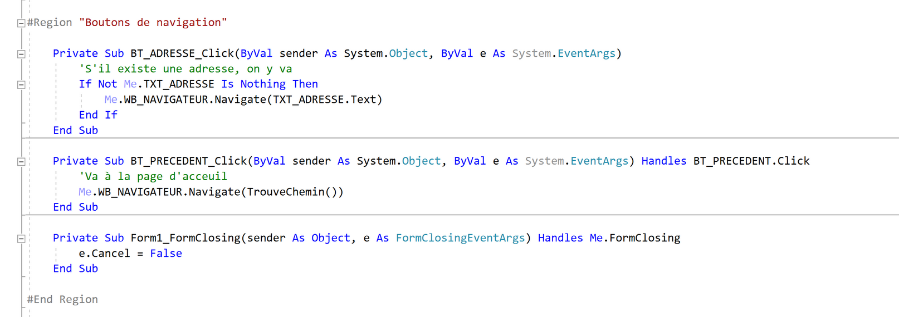
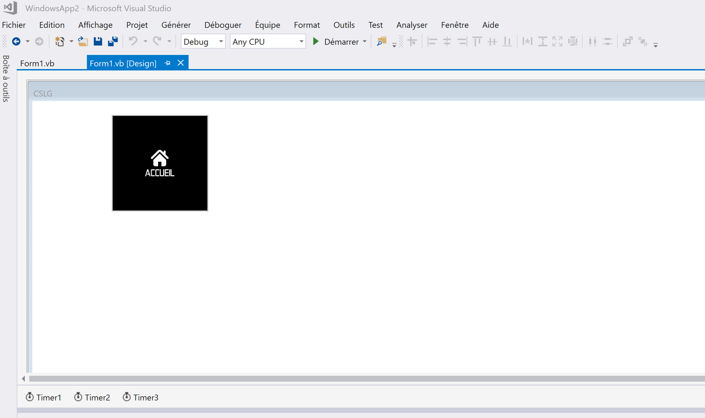
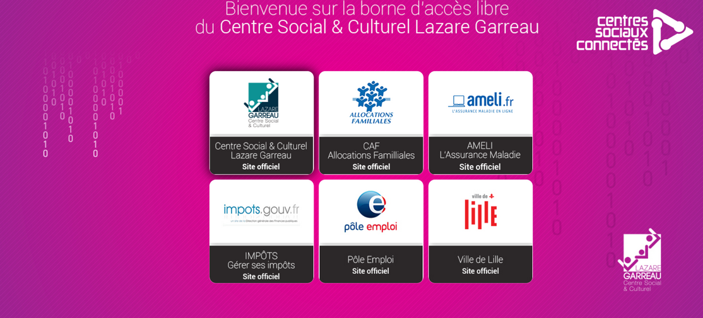

X
Stage au centre Social et Culturel Lazare Garreau - 2018
Developpement d'une borne d'acceuil pour les utilisateurs du centre, et y ajouter des statistiques de clics
Voir le cahier des charges :
Solution choisie :
Nous avons choisi de reprendre le code de l'année précédente, sur Visual Basic, d'une part car :
J'ai décidé de procéder de la sorte : Créer une application executable (en VB) qui permettait de controler la navigation (Grace au WebBrowser, un genre de iframe), et un bouton qui permettait de revenir a l'accueil.
Cette application bloque l'accès a la barre de recherche (pas le droit d'accéder a des sites différents de ceux proposés) et l'application ne peut être fermée. De plus, a l'allumage de la machine, l'application se lance directement, et en plein écran.
- Les solutions proposées par ce langages permettent d'effectuer les contraintes du cahier des charges (empêcher l'utilisateurs d'accéder a d'autres sites, et empêcher la possibilité de quitter l'application (avec alt+f4 par exemple))
- C'est le premier langage de programmation appris, et maîtrisé durant nos études
- La solution exécutable, qui va permettre d'obliger l'utilisateur d'accéder aux sites prédéfinis (voir image ci-dessous)
- La solution Front-end, avec HTML/CSS, lié au PHP qui va permettre de compter le nombre de clics sur les sites en questions, afin de proposer a notre tuteur des statistiques d'accès a ces sites
J'ai décidé de procéder de la sorte : Créer une application executable (en VB) qui permettait de controler la navigation (Grace au WebBrowser, un genre de iframe), et un bouton qui permettait de revenir a l'accueil.
Cette application bloque l'accès a la barre de recherche (pas le droit d'accéder a des sites différents de ceux proposés) et l'application ne peut être fermée. De plus, a l'allumage de la machine, l'application se lance directement, et en plein écran.
Version executable :
 Version Front-end :
Version finale et fonctionnelle :